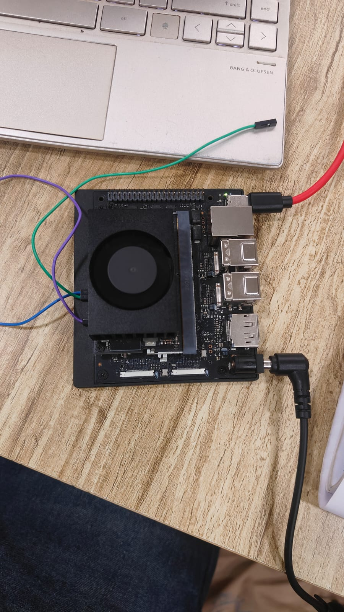

MILESTONE The whole implementation is in AGL. Two changes are merged and two more are up for review, so the entire demo, including the perception node that runs on the device, can be built from AGL's own tree with no out-of-tree pieces.
1. Everything is upstream
Over the course of the project the demo grew from a loose set of scripts into a set of proper AGL recipes. As of this week all of that work is submitted to meta-agl-devel:
- Merged: the application recipe,
agl-lidar-demo, which builds the Flutter HMI, ships the recorded clip, and installs the demo launcher. Gerrit 31990. - Merged: the autostart unit, so a freshly flashed image comes up with the local rosbridge and the looped bag replay running, no shell needed. Gerrit 32069.
- In review: the
lidar-detectorrecipe, which packages the PCL perception node so it builds and installs with the image. Gerrit 32137. - In review: the change that wires the detector into the demo, so the image detects on the target by default. Gerrit 32138.
The two review changes are stacked, the node recipe first and the wiring on top, so continuous integration builds them together. Once they land, anyone can build the complete, self-computing demo from a clean checkout.
2. The pipeline it ships
This is the result those recipes produce: the dashboard inside a built AGL image, with the perception node running on-target. The point cloud is in blue and the green boxes over it are the live detections, computed on the device from the raw cloud and published over rosbridge. The chips read the point count, the objects found this tick, the view rate, and a live link.

3. Onto the hardware
The same image is now built for the real embedded target. The agl-ivi-demo-flutter image for the Jetson Orin Nano, with the demo and the perception node baked in, builds cleanly and produces a flashable bundle. Getting there meant working around two problems on this branch that had nothing to do with the demo: AGL's own reference home screen does not currently build (a Flutter package lock it pins cannot be resolved offline), and the Jetson machine template still referenced an old disk-image type that this board has no layout for. With both handled, the image builds end to end into the tegra flash bundle.

Flashing and bringing the demo up on the board display is the immediate next step. That is the one thing still to confirm on real hardware: a clean build is not the same as a clean first boot, and the usual embedded unknowns are the display bring-up and the compositor. Until the board boots into the running demo, the honest claim is that the image builds into a flashable artifact and the pipeline is proven on an AGL image, not that it is verified on the Jetson.
4. What is next
- Documentation. The focus for the next few days is a clear, complete write-up: a reproduction guide that covers the build, the recipes, the known pitfalls, and the flash, so the whole project can be rebuilt from scratch by someone new.
- Verify on the Jetson. Flash the board, bring up the display, and confirm the live demo runs on the hardware. A screenshot from the board itself will go up the moment it does.
- Land the review changes. See the two open changes through review so the on-device perception is merged alongside the rest.
Links
- Application repository: github.com/shauryarane05/agl-lidar-hmi-app.
- Merged: Gerrit 31990 · Gerrit 32069.
- In review: Gerrit 32137 · Gerrit 32138.